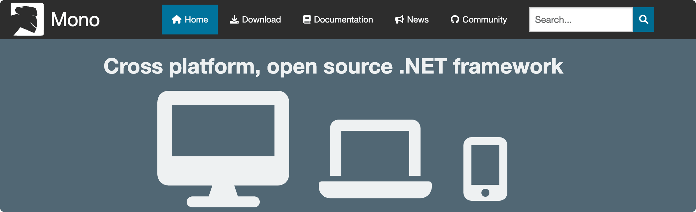

C# Development environment
To do a good job, one must first sharpen one's tools. Before we officially start writing C# code, we need to set up the development environment on our computer.
Setting up the C# development environment is not complicated at all — you only need to install two things:A runtime platform (.NET SDK)andA code editor, you can begin your C# programming journey.
Step 1: Understand the relationship between .NET and C#
Before installing the tools, let's first clarify a common question:Are C# and .NET the same thing?
No. Their relationship can be understood like this:
- C#is the programming language you use to write code, just like the "words" you use to write articles.
- .NETIt is the platform and toolset for running this code, just like the "printing press and paper" that allow text to be printed and disseminated.
Programs you write in C# must rely on .NET to run on your computer. Therefore, the first step in setting up a C# development environment is to install the .NET SDK.
The current mainstream version of .NET is.NET 8(Long-Term Support version), which supports Windows, macOS, and Linux, and is no longer limited to running only on Windows as in the early days.

Step 2: Install the .NET SDK
The .NET SDK (Software Development Kit) includes the compiler, runtime, and various development tools, and is the foundation of C# development. The installation steps are as follows:
- Visit the official .NET download page:https://dotnet.microsoft.com/download
- Select the latestLTS (Long-Term Support) version, it is recommended that beginners prioritize the LTS version, which is stable and has abundant resources.
- According to your operating system (Windows / macOS / Linux), download the corresponding installer and complete the installation following the prompts.

After installation, open the command line (on Windows, use "Command Prompt" or "PowerShell"; on macOS/Linux, use "Terminal"), and enter the following command to verify whether the installation was successful:
dotnet --version
If a version number is output (e.g.,8.0.xxx), it indicates that the .NET SDK has been installed correctly.
Step 3: Choose a code editor
With the .NET SDK, you can theoretically write code with Notepad and compile and run it from the command line. But in actual development, we all use dedicatedCode editor or IDE (Integrated Development Environment), they provide features such as code completion, error hints, debugging, etc., greatly improving development efficiency.
For C# beginners, the following two tools are recommended:
① Visual Studio (recommended for Windows users)
Visual Studio is Microsoft's flagship IDE tailored for C#. It has the most complete features and an excellent debugging experience, and is currently the most widely used C# development tool in enterprises.
- Advantages: Powerful, integrating code editing, debugging, testing, and publishing in one, especially suitable for developing Windows desktop applications and enterprise-level projects.
- Disadvantages: The installer is large (several GB), startup is slow, and it only supports Windows and macOS.
- Pricing: For personal learning useCommunity (Community Edition) is free, and its features are already very complete.
- Download URL：https://visualstudio.microsoft.com/zh-hans/downloads/

💡 During installation, on the "Workloads" page, check"ASP.NET and Web Development"or".NET Desktop Development", and all components required by C# will be installed automatically, with no need for separate configuration.
② Visual Studio Code (recommended for cross-platform users)
VS Code is a lightweight code editor with a small size and fast startup, supporting Windows, macOS, and Linux. By installing the C# extension, you can also get a complete C# development experience.
- Advantages: Lightweight and flexible, cross-platform, with a rich plugin ecosystem, suitable for developers who prefer a concise environment.
- Disadvantages: Requires manual installation of plugins, and some advanced debugging features are not as complete as those in Visual Studio.
- Pricing: completely free and open source.
- Download URL：https://code.visualstudio.com/
💡 After installing VS Code, search for and install it in the extension marketplaceC# Dev Kitplugin (officially produced by Microsoft), and you can get complete features such as IntelliSense, debugging, and project management.
How to choose?
- If you useWindows, and your main goal is to learn C# basics or develop Windows applications → recommendedVisual Studio Community。
- If you usemacOS or Linux, or you prefer a lighter editor → recommendedVisual Studio Code + C# Dev Kit。
More related tools
Step 4: Write your first C# program
After setting up the environment, let's verify it — use the command line to create and run the simplest C# project:
Open the command line and run the following commands in order:
dotnet new console -n HelloWorld cd HelloWorld dotnet run
If you see the output:
Hello, World!
Congratulations! Your C# development environment has been set up successfully, and you have successfully run your first program.
Develop C# on macOS and Linux
As mentioned earlier, modern .NET (.NET 5 and above) natively supports cross-platform operation. macOS and Linux users can simply install the .NET SDK, and the experience is basically the same as on Windows.
Additionally, you may also hear about something calledMono. Mono is an open-source cross-platform implementation of .NET introduced by the early community, and it was once the main way to run C# on Linux and macOS. But with Microsoft's official .NET becoming fully cross-platform, Mono's use cases have been greatly reduced, and it is now mainly used in specific scenarios such as the Unity game engine.For new projects, it is recommended to directly use the official .NET SDK, without needing to install Mono.
For more information about Mono, you can visit:http://www.mono-project.com/

other extensions